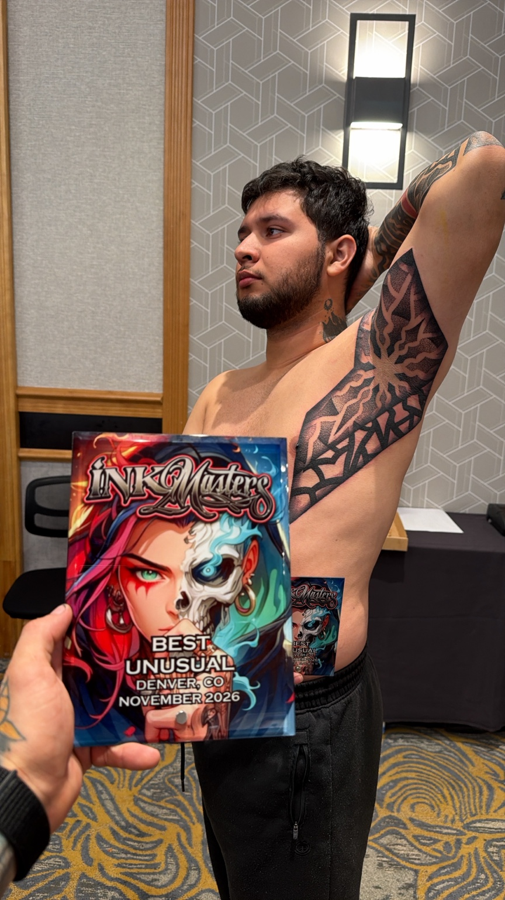
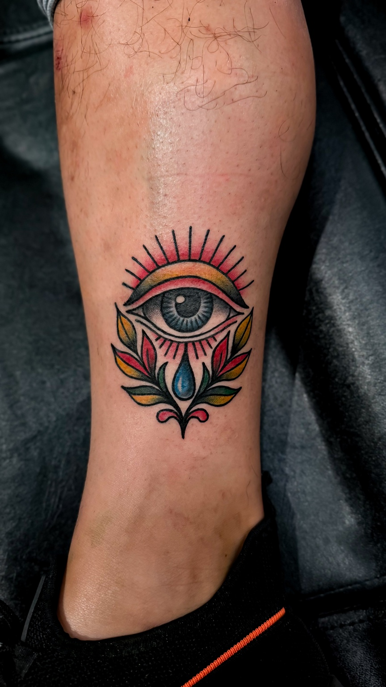
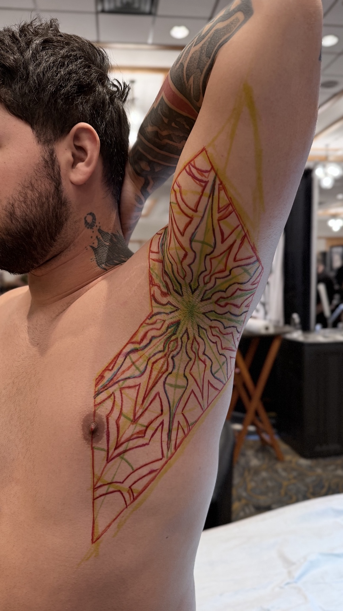
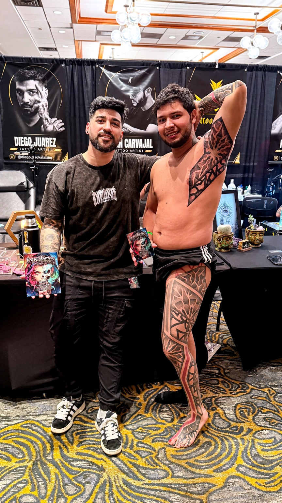

Diroka returns from Ink Masters Tattoo Show with seven awards
Diego Juarez, Julian Carvajal, Arnold Camargo and Kevin Vargas received awards at the convention. The studio celebrates the team’s achievements and welcomes Kevin as its newest artist.
Diroka regresa de Ink Masters Tattoo Show con siete premios
Diego Juarez, Julián Carvajal, Arnold Camargo y Kevin Vargas fueron reconocidos en la convención. El estudio celebra los logros del equipo y la incorporación de Kevin como nuevo artista.
Four artists represented Diroka Tattoo Studio at Ink Masters Tattoo Show, and all four returned with awards. Their seven wins span geometric, traditional, color realism, and black and gray work.
Diego Juarez earned three awards with two tattoos. His Best Unusual piece began with a freehand drawing directly on the skin: a radial geometric design that follows the armpit toward the arm and side of the torso.
His traditional eye, with a blue teardrop, colorful leaves, and bold black outlines, received both Best Small Color and Best Traditional.
Julian Carvajal received Small Black and Gray for a classical-inspired figure with wings. Detailed feathers and shading across the face give the small piece texture and depth.
Arnold Camargo won Best of Day Sunday with a color realism piece.
Diroka also welcomes Kevin Vargas to the studio. Its newest artist received Best Large Black and Grey and Best of Show Black and Grey, bringing two black and gray awards to the team.
To everyone who trusted our artists with their skin and supported the team at the convention: thank you. These awards also celebrate that trust and the stories we create together.
Cuatro artistas representaron a Diroka Tattoo Studio en Ink Masters Tattoo Show y los cuatro regresaron premiados. Sus siete reconocimientos abarcan trabajos de geometría, estilo tradicional, realismo a color y negro y gris.
Diego Juarez obtuvo tres premios con dos tatuajes. La pieza ganadora de Best Unusual comenzó con un dibujo freehand, realizado directamente sobre la piel: una composición geométrica radial que acompaña la axila y se extiende hacia el brazo y el costado.
Su ojo tradicional, con una lágrima azul, hojas de color y contornos negros definidos, recibió tanto Best Small Color como Best Traditional.
Julián Carvajal recibió Small Black and Gray por una figura de inspiración clásica con alas. El detalle de las plumas y el sombreado del rostro aportan textura y volumen a una pieza de pequeño formato.
Arnold Camargo ganó Best of Day Sunday con una pieza de realismo a color.
Diroka también le da la bienvenida a Kevin Vargas. El nuevo artista del estudio obtuvo Best Large Black and Grey y Best of Show Black and Grey, sumando dos reconocimientos en negro y gris para el equipo.
A quienes confiaron su piel a nuestros artistas y acompañaron al equipo en la convención: gracias. Estos premios también celebran esa confianza y las historias que construimos juntos.




